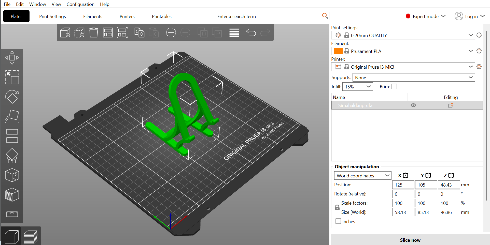
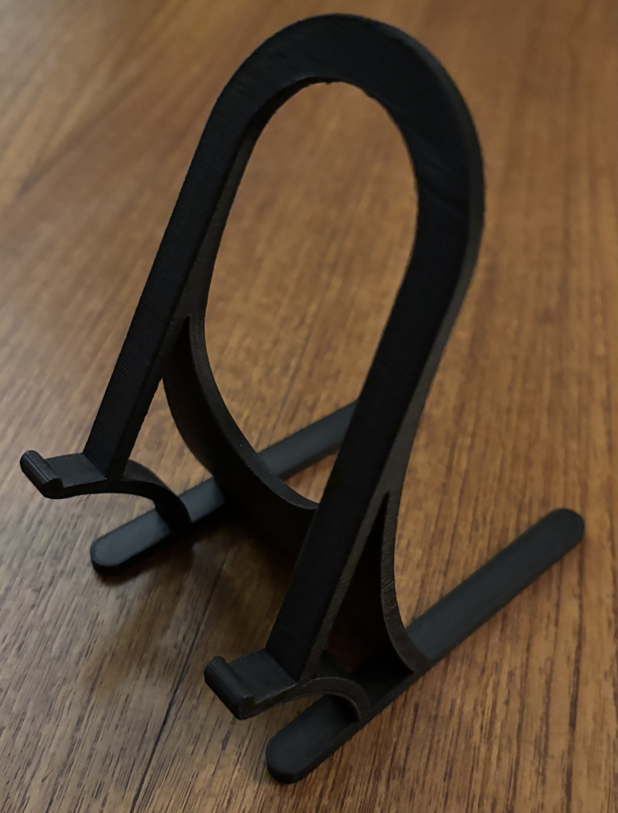
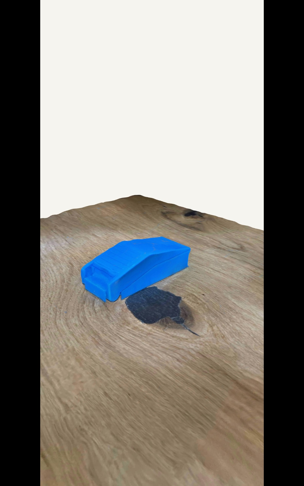

Verkefni 3 – 3D prentun og 3D skönnun
Í þessu verkefni vann ég með bæði 3D prentun og 3D skönnun. Markmiðið var að hanna hlut sem ekki væri hægt að framleiða með frádráttar framleiðslu (subtractive manufacturing) heldur aðeins með 3D prentun (additive manufacturing). Auk þess framkvæmdi ég prófanir á 3D prentara til að skilja betur takmarkanir og hönnunarreglur áður en lokahluturinn var prentaður.
Hluturinn sem ég ákvað að hanna var símastandur sem heldur símanum í hallandi stöðu á skrifborði. Einnig framkvæmdi ég 3D skönnun á hlut sem kallast pill splitter og er notaður til að skipta lyfjatöflum í minni hluta.
Hugmynd og hönnun
Upphaflega hafði ég hugsað mér að hanna símastand í verkefni 2, en áttaði mig fljótt á því að slík hönnun hentar mun betur fyrir 3D prentun. Með 3D prentun er hægt að búa til flóknari form og hallandi yfirborð sem væri erfiðara að framleiða með öðrum framleiðsluaðferðum.
Því ákvað ég að þróa einfaldan símastand sem heldur símanum uppréttum á skrifborði. Hallinn gerir notandanum kleift að horfa á skjáinn án þess að þurfa að halda á símanum, til dæmis þegar horft er á myndbönd eða fylgst er með tilkynningum.

3D módel af símastandinum.
Additive vs Subtractive framleiðsla
3D prentun er dæmi um additive framleiðslu þar sem hlutur er byggður upp lag fyrir lag með því að bæta efni við. Þetta gerir kleift að framleiða flóknari form, innri holrými og yfirhang sem erfitt eða ómögulegt væri að framleiða með hefðbundnum aðferðum.
Frádráttar framleiðsla (subtractive manufacturing) virkar hins vegar þannig að efni er fjarlægt úr stærra efnisstykki, til dæmis með fræsingu eða borun. Slíkar aðferðir eiga erfiðara með að framleiða flókin form eða innri holrými án þess að skipta hlutnum upp í fleiri einingar.
Símastandurinn sem ég hannaði inniheldur hallandi yfirborð og form sem henta sérstaklega vel fyrir 3D prentun og væri mun erfiðara að framleiða með frádráttar framleiðslu.
Prófanir og hönnunarreglur
Áður en lokahluturinn var prentaður framkvæmdi ég nokkrar prófanir til að skilja betur takmarkanir 3D prentarans. Með prófunum var hægt að meta hluti eins og yfirhang (overhang) og veggþykkt.
Overhang prófið hjálpaði til við að sjá við hvaða hallahorn prentarinn gat prentað án þess að þurfa support efni. Einnig var prófuð mismunandi veggþykkt til að tryggja að símastandurinn yrði nægilega sterkur.

Prófunarprent fyrir 3D prentun.
Minni símahaldari hér í Prusa, veggþykkt minnkuð og minni halli. Kom vel út gat farið í að prenta lokamodelið.
3D prentun
Eftir prófanirnar var símastandurinn prentaður á 3D prentara með PLA plasti. Til að prenta símastandinn var módelinu hlaðið inn í PrusaSlicer þar sem prentstillingar voru skilgreindar áður en hluturinn var sendur í prentun.
- Layer height: 0.2 mm
- Infill: 15%
Prentunin gekk vel og lokahluturinn kom út eins og gert var ráð fyrir í hönnuninni.
Standurinn heldur símanum stöðugum og gerir notandanum kleift að hafa símann sýnilegan á skrifborðinu til dæmis til að horfa á myndbönd eða fylgjast með tilkynningum.

Fullprentaður símastandur.
3D skönnun
Sem hluti af verkefninu framkvæmdi ég einnig 3D skönnun á hlut. Ég notaði Polycam fyrir það. Hluturinn sem var skannaður var pill splitter sem er notaður til að skipta lyfjatöflum í minni hluta.
3D skönnun gerir kleift að umbreyta raunverulegum hlut í stafrænt 3D módel sem síðan er hægt að skoða eða vinna með í CAD hugbúnaði.

3D skannað líkan af pill splitter.
Hvað ég lærði af verkefninu
Í verkefninu lærði ég hvernig 3D prentun virkar í framleiðsluferli og hvernig hönnun þarf að taka tillit til takmarkana prentarans eins og yfirhangs og veggþykktar.
Ég lærði einnig hvernig prófanir geta hjálpað til við að ákvarða hönnunarreglur áður en lokahlutur er prentaður.
Að lokum lærði ég hvernig 3D skönnun getur verið notuð til að umbreytast raunverulegum hlutum í stafrænt 3D módel sem hægt er að vinna með áfram.
Hönnunarskjöl
Hér eru hönnunarskjöl verkefnisins. Fusion 360 skráin inniheldur CAD hönnun símastandsins sem var notuð til að búa til 3D prentunarskrá. Módelið var síðan exportað sem 3MF skrá og opnað í slicer hugbúnaði þar sem prentstillingar voru skilgreindar áður en hluturinn var sendur í 3D prentun.
Heimildir
Við vinnslu verkefnisins studdist ég við nokkrar heimildir til að læra betur á hugbúnaðinn sem var notaður við hönnun, undirbúning 3D prentunar og 3D skönnun.